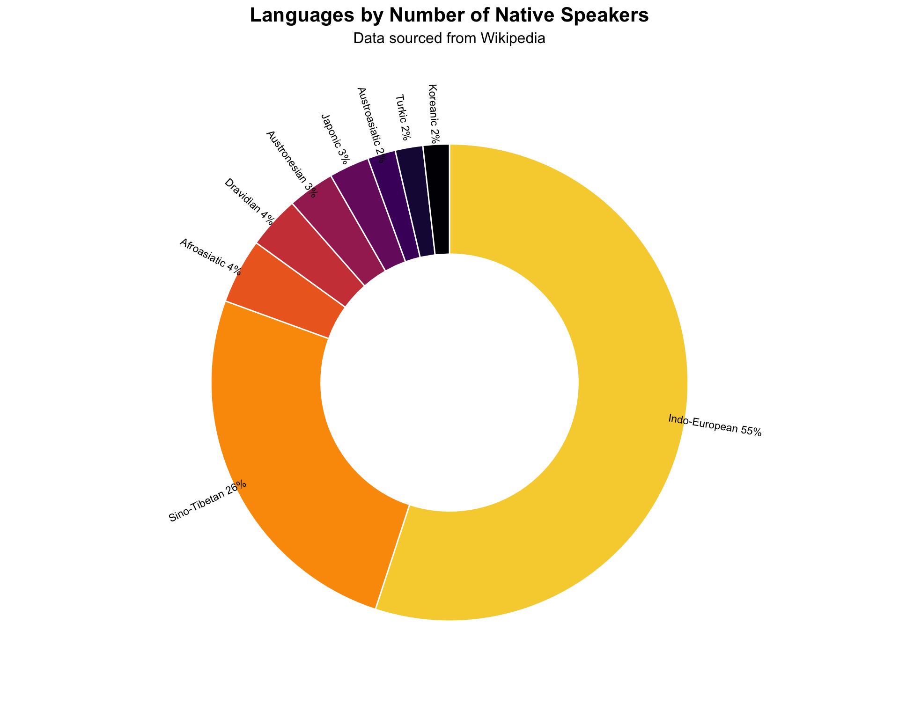
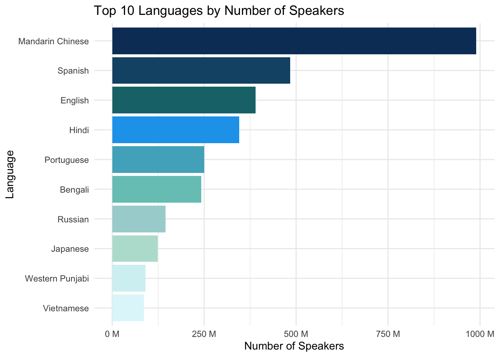
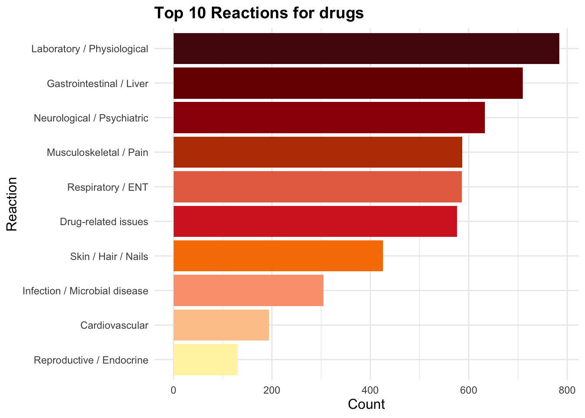
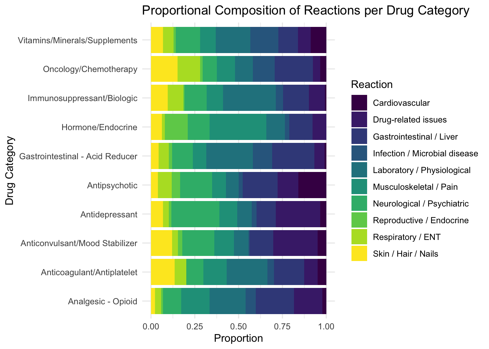

url <- "https://en.wikipedia.org/wiki/List_of_languages_by_number_of_native_speakers"
language <- read_html(url)
lan_table <- language |>
html_element("table.wikitable") |>
html_table(fill = TRUE) |>
clean_names() |>
mutate(speakers = native_speakers_millions) |>
select(-c(native_speakers_millions))Assignment 05: Web scraping and APIs
STAT 150: R for Data Science
Task 1. Basic 📝
I decided to search for some tables in HTML, but there was not much interesting data available 🤔. After exploring, I realized that web scraping HTML tables is not often used for visualizations 📊.
Nevertheless, we can work with what we have. Here is how I obtained data about the number of speakers of different languages from Wikipedia 🌐.
| language | language_family | branch | speakers |
|---|---|---|---|
| Mandarin Chinese | Sino-Tibetan | Sinitic | 990 |
| Spanish | Indo-European | Romance | 484 |
| English | Indo-European | Germanic | 390 |
| Hindi | Indo-European | Indo-Aryan | 345 |
| Portuguese | Indo-European | Romance | 250 |
| Bengali | Indo-European | Indo-Aryan | 242 |
My first visualization shows the distribution of native speakers across major language families 🌍.
And the winner is Indo-European 🏆:
- Germanic languages: English, German, Dutch, Swedish, Norwegian 🇬🇧🇩🇪
- Romance languages: Spanish, French, Italian, Portuguese, Romanian 🇪🇸🇫🇷🇮🇹
- Slavic languages: Russian, Polish, Czech, Bulgarian, Serbian 🇷🇺🇵🇱
- Indo-Iranian languages: Hindi, Bengali, Punjabi, Persian, Pashto 🇮🇳🇮🇷
- Celtic languages: Irish, Welsh, Scottish Gaelic 🍀
- Baltic languages: Lithuanian, Latvian 🌾
- Greek 🇬🇷
Code
ggplot(x, aes(x = 2, y = percentage, fill= language_family)) +
geom_bar(stat = "identity", color = "white") +
coord_polar(theta = "y", start = 0) +
geom_text(
aes(x = 2.7, y = label_position, label = label, angle = angle),
size = 3,
hjust = 0.5, # center horizontally
vjust = 0.5, # center vertically
lineheight = 0.9
) +
xlim(0.5, 2.7)+
scale_fill_manual(values = viridis(10, option = "B", direction = 1)) +
theme_void() +
labs(
title = "Languages by Number of Native Speakers",
subtitle = "Data sourced from Wikipedia"
)+
theme(
legend.position = "none",
plot.title = element_text(hjust = 0.5, size = 16, face = "bold"),
plot.subtitle = element_text(hjust = 0.5, size = 12)
)
The next insight is that the most spoken language is Chinese 🀄, largely due to China’s massive population, with nearly 1,000 M native speakers.
The most populous country is India 🇮🇳, which also contributes to the top 4 languages globally.
Other widely spoken languages include English 🇬🇧 and Spanish 🇪🇸, which remain among the most common languages worldwide.
Code
lan_table |>
slice_max(speakers, n = 10) |>
mutate( language = fct_reorder(language, speakers)) |>
ggplot(aes(language, speakers, fill = language)) +
geom_col() +
scale_y_continuous(labels = function(x) paste0(x, " M")) +
scale_fill_manual(values = c(
"#E0F7FA", "#D4F1F4", "#B9E0D4", "#A7D3D3","#76C7C0",
"#4FB0C6", "#1CA3EC", "#197278" ,"#145374", "#0D3B66"
))+
coord_flip() +
theme_minimal() +
theme(legend.position = "none") +
labs(
title = "Top 10 Languages by Number of Speakers",
x = "Language",
y = "Number of Speakers"
)
💊 API Data
At first, I was really struggling to find the right dataset — I couldn’t even decide on a topic that felt like mine. 😅
But when I finally found one, things didn’t get easier. I couldn’t even read the data… and you know why?
Because I completely forgot to use req_perform()! 🤦♀️
In the end, I discovered this website — an API from the U.S. FDA that provides information about drug enforcement and safety alerts. I decided to use their data about drugs.
It was still a bit of a pain 😬 — all fields came as strings, so I had to use str_detect() to categorize them properly.
respond <- request("https://api.fda.gov/drug/event.json?limit=1000") |>
req_perform() |>
resp_body_json()As a final result, you can now see the most frequent consequences after taking different types of drugs in the U.S. 🇺🇸
Code
df_long |>
group_by(reaction) |>
summarise(n = n()) |>
filter(reaction != "Other") |>
mutate (reaction = fct_reorder(reaction, n)) |>
ggplot(aes(x = reaction , y = n, fill = reaction)) +
geom_col() +
scale_fill_manual(values = c(
"#FFF3B0", "#FEC89A", "#FCA17D", "#F77F00",
"#D62828", "#E76F51", "#BB3E03", "#9D0208",
"#780000", "#540B0E"
)) +
coord_flip() +
theme_minimal() +
theme(
legend.position = "none",
plot.title = element_text(size = 14, face = "bold"),
axis.title.x = element_text(size = 12),
axis.title.y = element_text(size = 12)
) +
labs(
title = "Top 10 Reactions for drugs",
x = "Reaction",
y = "Count"
)
💊 Final Analysis: Drug Reactions
My finish line is a stacked proportional bar chart showing the composition of different reactions for each drug category.
In this chart:
- Each bar represents a drug category.
- The segments inside each bar show the proportion of each reaction within that drug.
- The bars are scaled to 100%, so you can easily compare the distribution of reactions across drugs.
Additionally, this visualization focuses on the top 10 drugs with the highest number of reported reactions.
📊 This allows us to quickly see which reactions are most frequent for each of the top drugs, and compare patterns across drug categories.
Code
most_frequent <- df_long |>
filter(drug_cat != "Other", reaction != "Other") |>
group_by(drug_cat) |>
summarise(n = n()) |>
slice_max(n, n = 10) |>
pull(drug_cat)
df_long |>
filter(drug_cat %in% most_frequent, reaction != "Other") |>
ggplot(aes(x = drug_cat, fill = reaction)) +
geom_bar(position = "fill") +
scale_fill_viridis_d(option = "D") +
coord_flip() +
theme_minimal() +
labs(
title = "Proportional Composition of Reactions per Drug Category",
x = "Drug Category",
y = "Proportion",
fill = "Reaction"
)